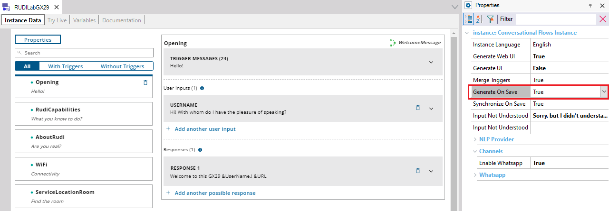

Determines if, when saving changes, the objects of the instance are generated or not if there are changes to be applied with respect to the previous generation. Scope Objects: Conversational Flows Instance Description
This property is available for the Flow of the Conversational Flows object. If set to TRUE, when saving changes, the objects of the instance will be generated if necessary (there are changes to be applied with respect to the previous generation).  Note: This option does not synchronize the instance. More information about instance generation: Chatbot generator See Also
|
| Backlinks | |
| Force Chatbot Generation menu option | Synchronize On Save property |